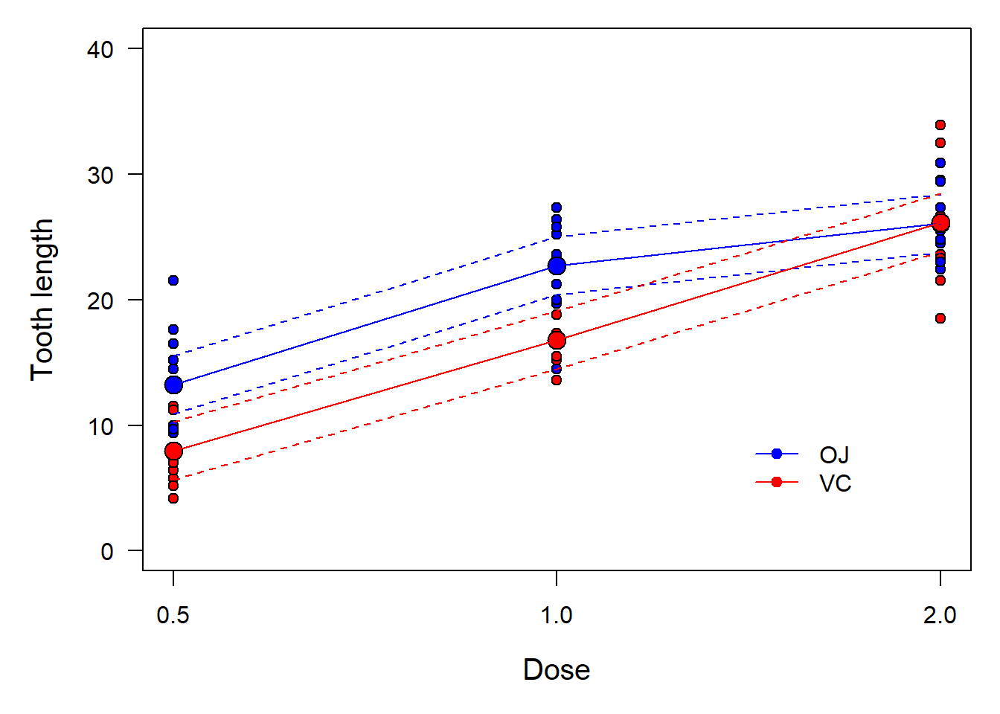

Diagnostics and effect sizes

Introduction
The objective of this assignment is to take a step back and evaluate the assumptions that we make when we conduct parametric tests and create linear models that we use to explain data or make predictions. This week we will start with how we can test our assumptions, and then move on to how we communicate our results with respect to effects of explanatory variables on our response of interest.
This lab will continue to build on our work with linear models in R, and will help us understand exactly why we use these methods, how we use them to draw inference, and how to interpret the results. In addition to building these critical skills, the lab will also serve to set the stage for the next several weeks of class during which we will examine a more generalized framework (the GLM).
By the end of this lab, you should be able to: 1) conduct visual assessment of the validity of assumptions related to linear models on a case-by-case basis, and 2) be able to compute and communicate effects of explanatory variables on a response of interest.
Exercises
Regression diagnostics
Let’s begin by doing some model diagnostics for a linear model. Remember, this should really be the first step, along with data exploration, in any analysis that you conduct using linear models. Let’s start off this week with the ToothGrowth data that some of you explored during the first lab. These data are from an experiment that studied the effects of three different doses of Vitamin C using one of two supplement types on the length of guinea pig teeth.
# Load the ToothGrowth dataset
data("ToothGrowth")
# To learn more about the data set, you can do
?ToothGrowth
# Take a look at the structure of the data
str(ToothGrowth)Dose is stored as a numeric variable, and that makes intuitive sense. However, we only have three different doses, so if we are assuming that dose is numeric, then we also need to assume that it is being randomly sampled from a population of potential doses, which I think is clearly not the case here (otherwise we would have some that weren’t nice round numbers). So, we should probably convert this to a factor.
Now, let’s get diagnosing.
The first thing we will do is check to see if the distributions of the data are normal within groups. We can do this with a couple of tools. First, make a boxplot of tooth length ('len') as a function of supplement type and dose.
Question 1. Based on the boxplot, does it appear that the distribution of tooth lengths is fairly normal within doses? What other kinds of plots could you use to visually inspect these distributions (note: not the residuals yet)?
Next, we can look at the actual regression diagnostics to examine whether or not we are in major violation of assumptions about the residuals in our model. Remember, the two assumptions related to the residuals are 1) they are normally distributed with a mean of zero, and 2) homogeneity of variance.
Start by fitting a model to test the additive effects of the supplement (supp) and doseage (dose) on tooth length (len) in guinea pigs.
# Remember to store the model as an object,
# like this, replacing the '...' in
# parentheses with the appropriate
# formula and data arguments. Cruel, #Iknow.
tooth.mod = lm(...)Next, graph the diagnostic plots of the residual error for the fitted model object using the plot function. See the lecture module for an example of how to do this. Remember, you can use the mfrow argument in the par function to get all four of these plots in one window if you prefer not to flip through them one by one.
Question 2. Based on our discussions about residual plots this week and the examples in the lecture module, does it appear that the residuals in the plots you made are (more or less) normally distributed with a mean of zero? How did you come to this conclusion?
Question 3. Based on the residual plots you have made and our discussions, does it appear that your model violates the assumption about homogeneity of variances? How did you come to this conclusion?
Interpreting main effects
Once you are satisfied that you have adequately reviewed the diagnostic plots and developed an opinion about whether or not we are violating assumptions, let’s move on.
Now that we’ve done a little model validation to assure that we are not completely blowing the assumptions of linear models (hopefully you concluded this as well), it is time to take a look at our results. We will do this one step at a time. First, print the output of your model using the anova function to determine whether or not the main effects of each explanatory variable were significant.
# Get the ANOVA table for your model,
# replacing 'tooth.mod' with
# whatever you named the model object.
anova(tooth.mod)Question 4. Were there significant effects of supplement and/or dose on guinea pig tooth length?
Question 5. How much of the variability in guinea pig tooth length was explained by the additive effects of supplement and dose? Remember, there are multiple ways to find this information. If you can’t remember either method, check the linear models tutorial from last week or Google it.
If you haven’t already done so, print a summary of the linear model so you can see the regression coefficients. Using what you learned in class this week, and the 1000-line long lecture module that your wicked awesome prof made for you this week, predict the mean expected value of tooth length for each combination of supp and dose. Remember: there are multiple ways to do this. All are in the lecture module. You can do the math by hand, or you can use the built-in predict function in R. Just pay close attention to how you do this, and make sure that your predictions make reasonable sense (they should if you do it correctly).
Question 6. Report the model-predicted tooth length for each combination of supplement and dose.
Next, calculate the observed mean of tooth length for each combination of supplement and dose. The easiest way to do this is with the ddply function in the plyr package:
# Load the plyr package
library(plyr)
# Check out the function if you've forgotten how to use it
?ddplyQuestion 7. Do the model predictions of tooth length for each combination of supplement and dose approximate the values and patterns in the observed data reasonably well? Describe any discrepencies you notice.
Interpreting interactions
Okay, now that you’ve had a chance to examine the simple model and take note of some differences between the observed data and the predictions, let’s go ahead and step up the complexity a little more.
The reason that our predictions did not match the observed data is because the model that we built allowed for different intercepts between the two levels of supp, but did not allow the effect of dose to differ between supplementation types. In order to account for this, we can include an interaction in our model, like we talked about in class.
Go ahead and fit a new model to the ToothGrowth data, this time including the interaction between supp and dose. Once you’ve fit the model, summarize it using both the anova function and the summary function.
Question 8. Is the interaction term in this model significant?
Question 9. How much variability in guinea pig tooth length is explained by this model? Is that more or less than the model that did not include the interaction?
Finally, use one of the methods from the lecture module to plot the predicted values of guinea pig tooth length for each combination of supplement and dose using the model that included the interaction term. To do this, you will want to use the built-in predict function in R. This can get a little messy, so I will help you along your way.
# First, we need to get all combinations
# of the unique values for supplement
# type and dose. To do this, we will
# use the 'expand.grid' function. Note that we are
# basically telling R to cross tabulate all of the unique values of
# supplement type with all of the unique values of dose
levels = expand.grid(unique(ToothGrowth$supp), unique(ToothGrowth$dose))
# Give the new df names.
# These names have to match the
# names of the variables
# used in fitting the model
names(levels) = c('supp', 'dose')
# Sort the dataframe by supplement for
# ease of plotting later on
levels = levels[with(levels, order(supp)), ] Now, you can make predictions using the predict function. Or, if you are a total masochist, you can do the calculations by hand using what you learned in lecture this week and the info you have in the lecture module.

Once you have the predictions, plot the observed data and add your predictions to the plots using the lines function like we used in the lecture module. One bonus point if you can get the observed data to plot by their own colors and get your predicted lines to match those colors like above. The plot will have a lot more meaning to the reader if you can make these kinds of distinctions. See the lecture module for guidance on how to make a pretty graph of your observed data and predictions.
Question 10. Now that you’ve had a chance to look at these things side by side, does the interaction model appear to make more intuitive sense than the main effects model? Is this supported by the amount of variability is explained by each of the models?
Wouldn’t it be nice to have some kind of really reliable statistic that you could use to clearly demonstrate this difference?…stay tuned for more on this topic.
This work is licensed under a Creative Commons Attribution 4.0 International License. Data are provided for educational purposes only unless otherwise noted.